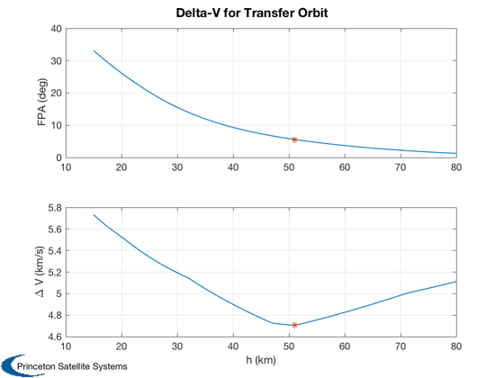

Compute the optimal flight path angle as a function of altitude.
The goal is a circular orbit. This script computes the optimal flight path angle at the time of separation after the second stage burn, to be on the desired transfer orbit to the final circular orbit. An angle of zero would indicate the perigee of a Hohmann transfer ellipse. The script allows for multiple burn segments with different exhaust velocities and thrust.
The engines in the example are a Merlin first stage, a J-2X second stage, and an AJ26-58 third stage.
The script also sizes an ellipsoid that can contain the volume of H2 and O2, based on the altitude with the minimum delta-V. This is needed by some drag models. ------------------------------------------------------------------------- See also RHSOptimalFPA, SurfaceAreaEllipsoidRevolution -------------------------------------------------------------------------
Contents
%-------------------------------------------------------------------------- % Copyright (c) 2013 Princeton Satellite Systems, Inc. % All rights reserved %--------------------------------------------------------------------------
Constants
%----------- mu = Constant('mu earth'); rE = 6378.14; rhoH2 = 84; % kg/m^3 rhoRP1 = 800; % kg/m^3 rhoO2 = 1141; % kg/m^3 g = 9.806;
Mission data
Define three segments
%---------------------- engine = {'Merlin' 'J-2X' 'AJ26-58'}; mixRatio = [ 2.24 5.5 2.24]; uE = g*[ 311 448 331]; rhoFuel = [rhoRP1 rhoH2 rhoRP1]; bC = 2000/.05/4; % Ballistic coefficient f = 4.5; % Ellipse coefficient mDry = 12000; % Target conditions, Mach and altitude % This example is from DARPA's XS-1 %------------------- mach = 10; hF = 100*Constant('nmi to m')/1000; % Compute as a function of 100 altitude points. % This is the altitude achieved by the first stage. %-------------------------------------------------- h = linspace(15,80);
Begin calculations
% Conditions at separation altitude %---------------------------------- p = StdAtm(h*1000); v = mach*p.speedOfSound/1000; % Orbit radii %------------ rF = rE + hF; r0 = rE + h; % Perform a numerical search for each specified altitude %------------------------------------------------------- n = length(h); dV = zeros(1,n); gamma = zeros(1,n); fprintf(1,'Perfoming fminsearch for %d points...\n',n); for k = 1:n gamma(k) = fminsearch( @RHSOptimalFPA, 0, [], h(k), hF, v(k), bC ); dV(k) = RHSOptimalFPA( gamma(k), h(k), hF, v(k), bC ); end % Altitude producing the minimum delta-V [dVMinH,kM] = min(dV);
Perfoming fminsearch for 100 points...
wE =
7.29211542941961e-05
Plot
Plot2D(h,[gamma*180/pi;dV],'h (km)',{'FPA (deg)','\Delta V (km/s)'},'Delta-V for Transfer Orbit',[],{},{},1,[],1) subplot(2,1,1) hold on plot(h(kM),gamma(kM)*180/pi,'*'); subplot(2,1,2) hold on plot(h(kM),dV(kM),'*');
Calculate fuel volume and ellipsoids
dVFirst = 1954.9; % delta-V from the first stage dVTotal = dVMinH*1000 + dVFirst; mR = exp(dVTotal./uE); mFuel = mDry*mR - mDry; mO2 = mixRatio.*mFuel./(1 + mixRatio); mH2 = mFuel./(1 + mixRatio); vol = mO2/rhoO2 + mH2./rhoFuel; % Find the ellipsoids enclosing the propellant %--------------------------------------------- a = sqrt(3*f*vol/(4*pi)); c = a/f; s = zeros(1,3); for k = 1:3 s(k) = SurfaceAreaEllipsoidRevolution(a(k),c(k)); end disp('Elliosiod surface areas (m^2)') disp(s) %-------------------------------------- % PSS internal file version information %--------------------------------------
Elliosiod surface areas (m^2)
702.954731482056 822.589285228891 605.033412176421